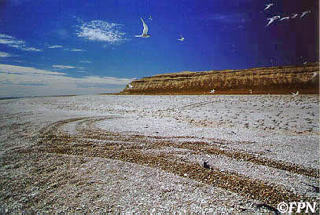

 Recreación irresponsable. Huellas de una 4x4 atraviesan una colonia de nidificación de gaviotines. Semejante acción, aparte de que seguramente se van a pisotear y matar muchos pichones y huevos, puede causar el abandono permanente de la colonia por parte de los adultos, ocasionando la muerte de todos los pichones que quedan hambrientos y sedientos hasta exporar, lo cual significa el fracaso completo del ciclo reproductivo de ese año, con la conseguiente pérdida muy significatva del tamaño de la pobación. Y eventualmente el área podría no ser utilizada más por esta especie, ya que la tendrán marcada como zona de probable fracaso de la nidada. Y todo por que alguien que no tiene sensibilidad por la naturaleza alegremente - y cuando no con saña - arremetió si vehículo para ir de A a B sin importar lo que había en el suelo. Punta Nifas, Chubut, Enero 1999. La imagen pertenece a la Fundación Patagonia Natural, Puerto Madryn |